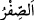

” denilir. İçi boş olan her şeye “
” denir. et-Tibyân adlı eserde böyle geçmektedir.
Şerhu’t-Takvîm adlı eserde ise şöyle denilir: Muharrem ayındaki haramlık, bu ayda
(Safer ayında) bulunmadığı için ona bu isim verilmiştir.
Rebîayn (Rebîu’l-evvel ve Rebîu’l-âhir): Mahsul ve gelirin bolluğu sebebiyle
Araplar bu iki ayda sefere çıkmadıkları ve evlerinde durup bekledikleri için onlara
“Rebîayn” adı verilmiştir. Araplara göre iki türlü rebî’ vardır: Aylar içerisindeki rebî’
ve mevsimler içerisindeki rebî’. Aylar içerisindeki Rabîayn, Safer ayından sonraki iki
ay, yani Rebîu’l-evvel ve Rebîu’l-âhir aylarıdır. Mevsimler içerisindeki rebî’ de iki
tanedir: Birincisi er-Rebîu’l-evvel mevsimidir ki yer mantarlarının çıktığı, çiçeklerin
açtığı bahar mevsiminin adıdır. Buna “Rebîu’l-kele” adı da verilir. Diğeri ise
meyvelerin yetiştiği güz mevsimi olan er-Rebîu’s-sânî’dir. Aylardaki iki Rebî’i
mevsimlerdekinden ayırdetmek için aylardakinde mutlaka “Rebîu’l-evvel” ve
“Rebîu’l-âhir” ayı denir.
Cümâdeyn (Cumâde’l-ûlâ ve Cumâde’l-âhire): et-Tibyân adlı eserde kaydedildiğine
göre bu iki ayda soğuğun şiddetinden dolayı su donduğu için onlara Cümâdeyn adı
verilmiştir. Şerhu’t-Takvîm adlı eserde ise şu açıklama yer alır: “cümâdâ” kelimesi,
“cümüd” kökünden alınmıştır. “Cümüd veya cümd”, sert, yüksek ve haşin yer demektir.
Cümâde’l-ûlâ ismi ilk konulduğunda zaman sıcak, mekanlar da sıcaklığın tesirinden
sert, yüksek ve haşin bir durumda olduğu için bu ay böyle isimlendirilmiştir. Cümâda’l-
âhire ise anlatılan özelliklere sâhip ayın peşinden gelen aydır.
Receb: Câhiliye döneminde Araplar, bu aya tâzim ederek savaşmayı terk ettikleri için
ona Receb ismi verilmiştir. Araplar bu ayı “Receb-i Mudar” (Mudar’ın Receb’i) diye
isimlendirirlerdi. Mudar, bir kabilenin ismidir. Bu kabile, diğer Arap kabilelerine göre
Receb ayına daha çok tâzimde bulunduğu için ona bu isim verilmiştir. Peygamber
Efendimiz (a.s.), bu ay hakkında: “Cümâdâ ile Şâban arasındaki Receb-i Mudar...”[134]
buyurmuştur. Hadiste böyle buyurulması ya konuyu pekiştirmek ya da haram aylardan
olan Receb’in bu iki ay arasındaki Receb olduğunu, nesî (haram ayları erteleme)
hesabına göre isimlendirdikleri Receb olmadığını açıklamak içindir. Yâhut da Araplar
bazen Receb ve Şâban aylarını Receb’i Şâban’a üstün tutarak “Recebeyn (Receb
ayları)” derlerdi. Bazan da “Şâbâneyn (Şaban ayları)” derler ve Şâbân’ı Receb’e üstün
tutarlardı.
Şâban: Araplar bu ayda dağılıp birbirlerinden ayrıldıkları için ona “Şâban” ismi
verilmiştir. Şâban kelimesi, tefrîk (ayırmak, fırkalara ayırmak) mânâsına gelen “teş‘îb”
kökünden gelmektedir.
Ramazan: Bu aya isim verilirken sıcaklık çok şiddetli olduğu için ona “Ramazan”
denilmiştir. Öyle ki o ayda sütten yeni kesilmiş deve yavruları zayıf düşerdi. Bu aya bu
ismin verilmesi, tıpkı kendisinde hac yapılan aya Zü’l-hicce (hac sahibi/ayı) adının
verilmesi gibidir.
Şerhu’t-Takvîm’de şu bilgiler yer alır: “er-Ramd”, güneş ışığının kum ve diğer şeyler
üzerine çok sıcak bir şekilde düşmesidir. Bu aya bu ismin verilmesinin sebebi şudur: